AI Academy · Level 4 · Grade 9 · Week 23 · Student lesson
Hold Out Test Data
Learn to understand, design, build, test and explain AI systems responsibly.
Project: Responsible Plant Classifier
Before you start
Week 13: final labels must not change the chosen model.
Plan time to read, investigate and explain. Keep predictions separate from observations.
Student lesson · 1 of 17
Your mission
Your learning target
I can freeze the full evaluation procedure before testing.
I can report a held-out result with counts and limitations.
I can recognize when test feedback has become development.
Remember before reading
Close your notes first. A rough first answer helps us choose the right starting point; it is not a score for your ability.
Without opening the old lesson, explain one key idea from Train a Regression Model. Give an example and a mistake that the idea helps you avoid.
Without opening the old lesson, explain one key idea from Mean, Median, and Baselines. Give an example and a mistake that the idea helps you avoid.
Without opening the old lesson, explain one key idea from Precision and Recall. Give an example and a mistake that the idea helps you avoid.
After trying, check the relevant lesson or ask your teacher. Change the part of your explanation that the evidence shows was wrong.
The final test set must remain untouched until model and threshold choices are finished, or it becomes part of training by decision.
Builder name and experiment date:
Readiness for the connected explanation
Why is validation not an untouched final test?
This week’s end goal
By the end, I can explain hold out test data using a traced example and a stated limitation.
Student lesson · 2 of 17
Notice the evidence
PICTURE ENTRY
Notice → Predict → Explain
Begin with visible evidence; do not explain more than the picture and information support.
Name three visible details without interpreting them.
Predict the data, model, or evaluation decision being made.
Identify one hidden assumption that could change the result.
State what evidence would confirm or reject your prediction.
My prediction and supporting evidence:
A closer explanation
A final test is valuable because it did not guide model choices. Freeze the model, training preprocessing, threshold, metric, missing-prediction policy and test membership. Record the version before opening test labels. A classroom result is evidence about a small chosen set, not approval for deployment.
Use fictional classroom data throughout this investigation. Keep the task, units, reference labels and data split visible as you reason. Earlier weeks supplied the model-building process; this week examines final testing and honest claims.
Student lesson · 3 of 17
See how it works
ML MECHANISM
Input → Model → Evidence
Trace the information, fitted behavior, and evaluation proof separately.
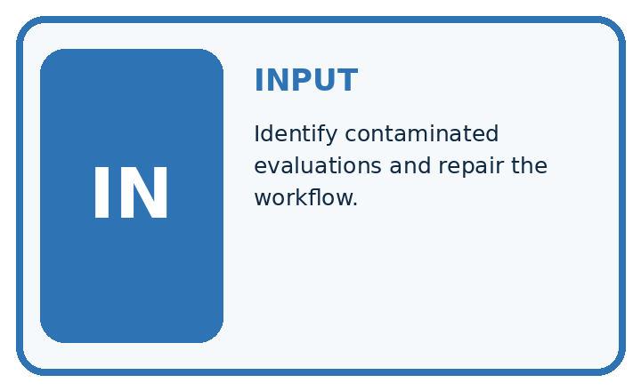
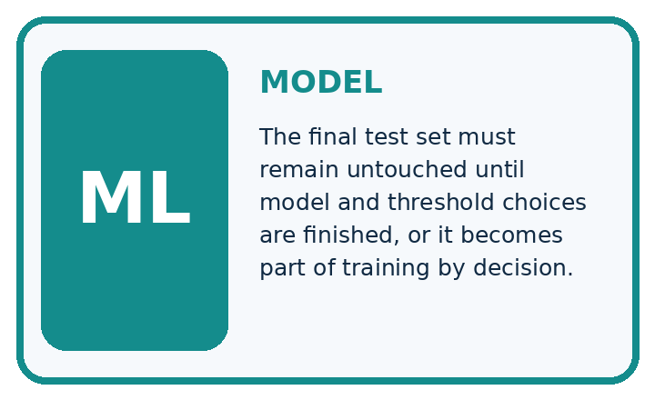
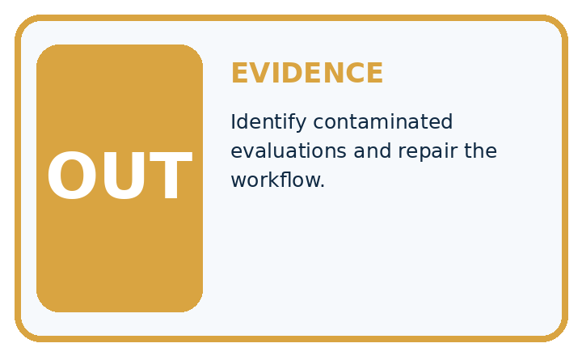
QUESTION Identify contaminated evaluations and repair the workflow.
MODEL IDEA The final test set must remain untouched until model and threshold choices are finished, or it becomes part of training by decision.
PROOF NEEDED Use an unseen case, visible calculation, error analysis, and a stated limitation.
Draw a fresh data → model → prediction → evaluation trace:
A closer explanation
A frozen classifier is tested on 20 fictional cases: TN 12 FP 2 FN 3 TP 3, blocked positive. Accuracy is 15/20=75 percent, precision 3/5=60 percent and recall 3/6=50 percent. Its previously fitted always-clear baseline gets 14/20=70 percent. The candidate improves accuracy here but misses half the blocked cases.
Before continuing, underline the decision rule and circle the evidence that supports the conclusion. Explain the example to a partner without replacing the counts or conditions with a stronger claim. Keep the distinction between an observed result and a proposed next step.
Connect the picture and the explanation
Point to the input, the deciding step and the result in this week’s visual. Explain the same step in ordinary words. A picture helps when you can say what each part represents.
Student lesson · 4 of 17
Compare the cases
EVALUATION DESIGN
Four Tests, Four Kinds of Evidence
A system is not understood until it survives more than one comfortable example.


NORMAL Expected data and expected behavior.
BOUNDARY Value close to a threshold, ambiguous label, or uncertain prediction.
MISSING Necessary field, label, source, or measurement is unavailable.
SHIFTED New lighting, species, device, subgroup, or time condition.
Which case most threatens today's claim, and why?
Change one thing in the pictured case
Change: The team changes a threshold after inspecting the false negatives.
Prediction: This set is now development evidence for the revised model.
Reason: Using final outcomes to change the model breaks the untouched hold-out role.
Student lesson · 5 of 17
Words that unlock the idea
VOCABULARY
Words You Can Calculate and Defend
A definition matters when it lets you interpret a new dataset, model, or result.
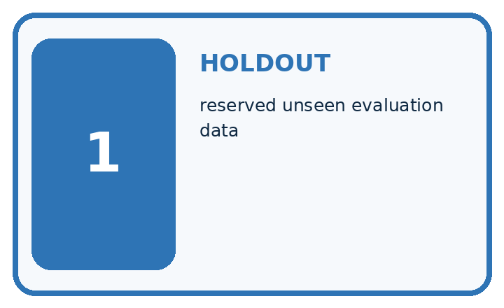
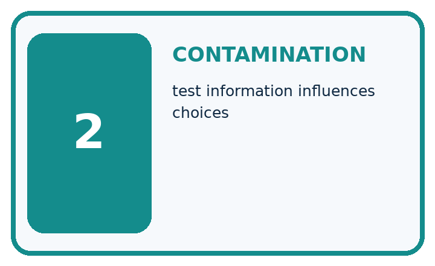
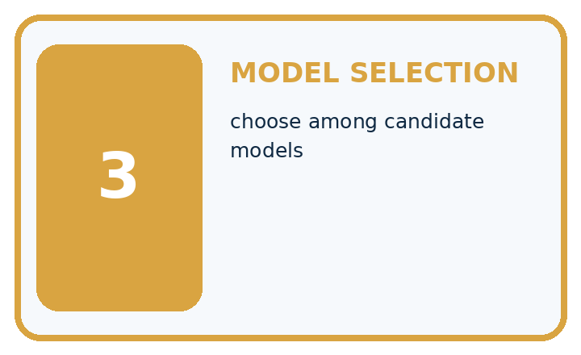
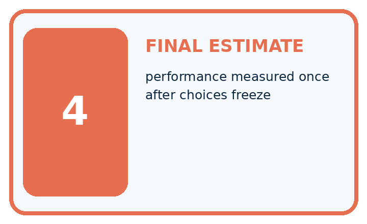
| Term | Precise meaning | My ML example |
|---|---|---|
| holdout | reserved unseen evaluation data | |
| contamination | test information influences choices | |
| model selection | choose among candidate models | |
| final estimate | performance measured once after choices freeze |
Repair the claim using a definition, calculation, or test record:
Words used in the closer explanation
| Word | Meaning |
|---|---|
| Freeze | Record a fixed model and procedure before testing |
| Held out | Kept separate from development decisions |
| Provenance | A record of where data and results came from |
| Claim | A statement whose scope must match its evidence |
Student lesson · 6 of 17
Follow a worked example
WORKED EVIDENCE
Reason Step by Step
Predict first. Then check each step. A correct answer without visible evidence cannot be audited.
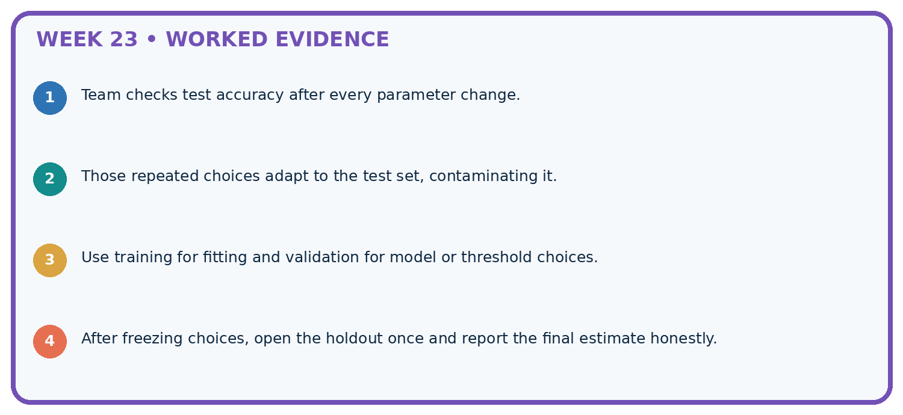
STEP 1 Team checks test accuracy after every parameter change.
STEP 2 Those repeated choices adapt to the test set, contaminating it.
STEP 3 Use training for fitting and validation for model or threshold choices.
STEP 4 After freezing choices, open the holdout once and report the final estimate honestly.
Recalculate, retrace, or restate the evidence independently:
A closer explanation
Final testing and honest claims at a glance
Learn from the worked case
Cover the result before checking it. Say what is given, choose the procedure, and follow one step at a time. Then uncover the result and explain your first mismatch. Ask why a step is allowed, not only what number it produces.
A pictorial worked case: Hold Out Test Data
Open the final hold-out only after recording the frozen model choice.
The facts we will use
Frozen plant classifier evaluates12 new grouped leaves: TP 3, FN 1, FP 2, TN 6. Positive means spotted.
All inputs and outcomes in this worked example are invented classroom data; no real model run is claimed.


Read the picture one step at a time
Why this result follows
Read the picture in order. Report these twelve held-out cases and their collection conditions; preserve all three error records. The arrows show which recorded input or intermediate result each decision uses. Explain the deciding step aloud before checking the changed case; pointing to the final answer alone does not show how it follows.
What this example does not establish
A hold-out can still be unrepresentative, too small or badly labelled; separation alone does not guarantee reliable estimates.
Read the labelled picture: What is needed for an honest final claim about the revised version? Point to the relevant step in the picture, then write the changed result and the rule or evidence that supports it.
Change one thing: The team changes a threshold after inspecting the false negatives. Predict the result before checking the explanation. What remains the same?
Student lesson · 7 of 17
Find and repair a mistake
ERROR DETECTIVE
Compare → Diagnose → Repair
Do not patch the answer. Find the earliest unsupported assumption, data problem, or experiment error.
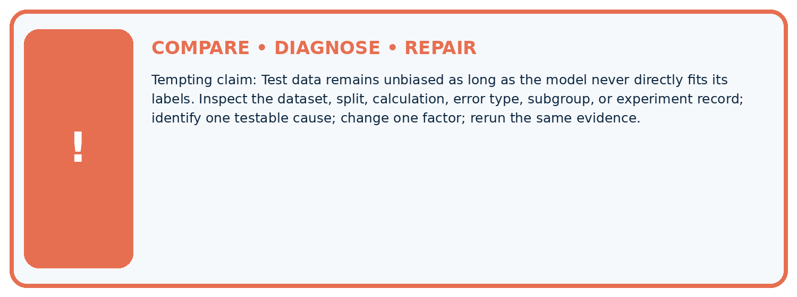
| Evidence record | Expected | Actual | Likely cause / next test |
|---|---|---|---|
| normal case | passes | ||
| boundary case | defined behavior | ||
| missing case | safe fallback | ||
| shifted case | measured limit |
Diagnose one cause and name the cleanest next experiment:
A closer explanation
A report can honestly say 15 of 20 correct on this fictional held-out set. It cannot say the model is 75 percent reliable for every child, school or future input. Do not fabricate more examples to make a result sound decisive.
Student lesson · 8 of 17
Practise together
ML STUDIO
Specify Before You Run
A trustworthy result can be reproduced from the recorded data, code, settings, and evaluation rule.

Experiment record
QUESTION + intended use + success threshold
DATA version + grouped split + leakage check
CODE/preprocessing + features + model + settings + seed
METRICS + positive class + units + denominators
PREDICTIONS + errors + subgroup slices + limitations
HUMAN reviewer + release, revise, limit, or stop decision
Write the minimum record needed to reproduce today's result:
A closer explanation
After seeing three missed blocked cases, the team changes its threshold. The old test has now informed development. Preserve the first result and label later scores as post-test development. A new independent test is needed for a new untouched-test claim; repeatedly splitting the same inspected rows does not erase what was learned.
Practise with less help: Compare a baseline
Use workbook W2 for the connected example “Final testing and honest claims”. First fill the input and rule boxes. Try the middle steps before asking for a hint. After a hint, try the next step yourself.
| Plan | Do | Check |
|---|---|---|
| What is given? Which rule or procedure applies? | Record each intermediate step. | Does the result follow? What remains unknown? |
Explain your trace to a partner. Your partner points to one step to check. Swap roles on the next case. Each person writes their own explanation.
Check your reasoning
Use the worked case for Final testing and honest claims. Proposed explanation: “A final answer is enough”. Decide whether this explanation is supported. Point to the step or supplied fact that decides; explain your repair if needed.
Answer on your own before discussion. If you are unsure, say which step you need help with.
Explain the picture
What is needed for an honest final claim about the revised version? Point to the relevant step in the picture, then write the changed result and the rule or evidence that supports it.
This is supported practice. Keep the separately named independent case for an attempt before feedback.
Student lesson · 9 of 17
Run the investigation
EVIDENCE LAB
Predict → Run → Calculate → Interpret
Keep the test conditions fixed, record every result, and change only one planned factor.
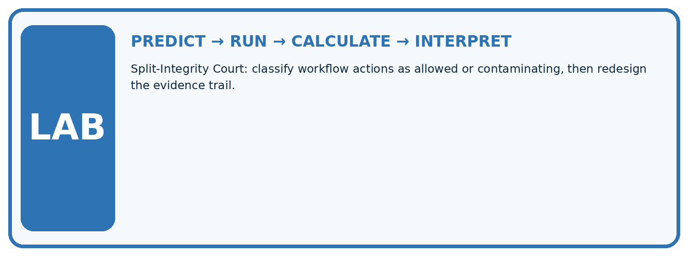
1. Write the hypothesis and expected evidence before running.
2. Split-Integrity Court: classify workflow actions as allowed or contaminating, then redesign the evidence trail.
3. Run one normal, one boundary, one missing, and one shifted case.
4. Calculate the metric from raw counts or row-level errors.
5. Interpret what changed, what did not, and what remains unsafe or unknown.
| Case | Prediction | Actual | Calculation / evidence | Meaning / next test |
|---|---|---|---|---|
| Normal | ||||
| Boundary | ||||
| Missing | ||||
| Shifted |
Plan → try → check
Before trying: what do I expect, and why? While trying: which step could first go wrong? Afterwards: what did I actually observe, and what should change? Keep “not run” if you only traced the procedure.
Student lesson · 10 of 17
Build your understanding
MASTERY
From Knowing the Word to Owning the Idea
Move upward only when you can produce evidence without copying the example.

DEFINE Use all four terms precisely: holdout, contamination, model selection, final estimate.
CALCULATE Reproduce the worked evidence with units and denominator.
TRACE Explain the data, code or decision path.
DIAGNOSE Test data remains unbiased as long as the model never directly fits its labels.
TRANSFER Solve a fresh dataset or model case.
IMPROVE Change one cause and rerun fixed evidence.
DEFEND State intended use, metric, limitation, and human responsibility.
Student lesson · 11 of 17
Connect your project
CUMULATIVE PROJECT
Responsible Plant Classifier
Every week adds one reviewable artifact to the same evidence-based capstone.
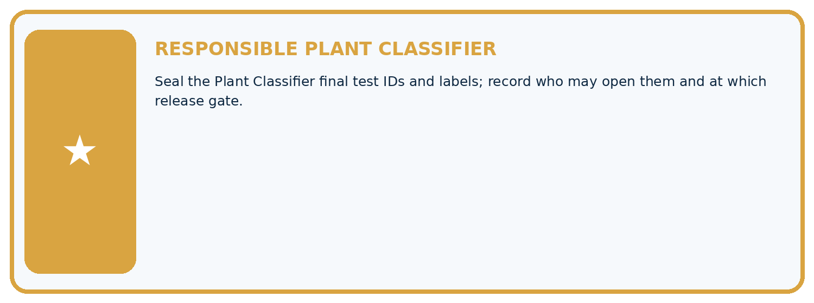
Which requirement or risk does this artifact address?
Which dataset, split, code, and metric version does it use?
What normal and shifted cases were tested?
What remains uncertain or weak?
What decision still belongs to a teacher or qualified human?
My evidence-linked project decision:
Evidence for your project
For your Responsible Plant Classifier, save the input, procedure, observed result and limitation of this check. Label this worked example as practice; use a different, previously unreviewed case when checking independent understanding.
Student lesson · 12 of 17
Show what you know
INDEPENDENT PROOF
Explain • Calculate • Transfer • Defend
Complete this with a fresh case after guided practice and compare it with the mastery criteria.
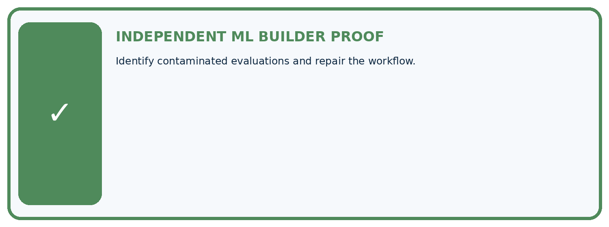
□ Define the task, feature/target roles, and intended-use boundary.
□ Show the calculation, code trace, or experiment record.
□ Test a normal case and one revealing boundary, missing, or shifted case.
□ Diagnose one failure without changing several factors at once.
□ Name a limitation, fairness concern, and the human-review action.
Independent evidence and defense:
My level: □ Not yet □ With one hint □ Independently □ I can teach and defend it
Student lesson · 13 of 17
Study a complete case
Week 23 Worked case
Use the supplied details to practise the weekly concept before attempting the independent question. This case extends the illustrated lesson.
The situation
A final-test folder has twenty leaves; its labels are opened weekly to choose models.
The question
Is it still untouched?
Worked explanation
No. It functions as validation. Reserve a genuinely unused set for final evaluation or disclose the limitation.
Explain it in your own words
Which detail supports the answer, and why does it matter?
Trace the supplied case visually
A repeatedly inspected test set is no longer final
| Evidence or stage | Value or result |
|---|---|
| Reserved folder | Twenty leaves |
| Weekly inspection | Labels influence model choice |
| Actual role | Validation |
| Repair | Reserve genuinely unused final cases |
A final-test folder has twenty leaves; its labels are opened weekly to choose models.
Is it still untouched?
No. It functions as validation. Reserve a genuinely unused set for final evaluation or disclose the limitation.
Student lesson · 14 of 17
Try a new case independently
Independent case: Apply independently
A new frozen test has TN 7 FP 1 FN 2 TP 2. Calculate accuracy, precision and recall and state a bounded claim.
Attempt this case before feedback. Record any help. Earlier examples below are further practice; a case already practised with feedback cannot establish fresh transfer.
Week 23 Independent application
Close the worked explanation. Apply the idea to this different question without copying.
You inspect final test failures, change features to fix them and report the new score on that same test set as untouched. What is wrong?
My answer, with a trace, calculation or supporting evidence
Create and test
Change one relevant detail. Predict the result before testing. Include a boundary or missing-information case when it helps reveal a limit.
My changed input and expected result
Connect to your project
Seal the Plant Classifier final test IDs and labels; record who may open them and at which release gate.
The evidence I will keep
Your teacher has the independent answer and scoring criteria. Complete the matching workbook week to keep your practice evidence together.
Transfer practice from the original programme
After seeing test errors, a team adjusts its threshold and reports the improved score on that same test. Rename the set's role and describe an honest final report if no new data exists.
Use feedback to improve
Attempt the independent case before hints. Record whether you worked alone, used a hint or followed a model. After feedback, fix the first unsupported step and explain why it changed. A later check uses a changed case, not a copied answer.
Student lesson · 15 of 17
Your lesson route
Start with this question: Open the final hold-out only after recording the frozen model choice.
| By the end, I can | How I will show it |
|---|---|
| Freeze the full evaluation procedure before testing | Explain the deciding step, show a trace or test, and state one limit. |
| Report a held-out result with counts and limitations | Explain the deciding step, show a trace or test, and state one limit. |
| Recognize when test feedback has become development | Explain the deciding step, show a trace or test, and state one limit. |
Remember → watch and explain → try with help → investigate → try independently → keep project evidence. Your teacher may spread this lesson across several classes.
Keep your first prediction. Compare it with what the evidence shows and explain any change.
Student lesson · 16 of 17
Finish and return
Close your notes. Explain this goal in your own words: Freeze the full evaluation procedure before testing
If you are unsure, return to the worked picture and explain one arrow. If you are ready, change an input or assumption and justify your prediction.
Save your workbook evidence. At the next review, try a different case before opening your old answer.
Student lesson · 17 of 17
Supported practice, repair and portfolio
Use this supported practice once, in the browser or on paper. Keep the reserved independent assessment for a separate first attempt before teacher feedback.
Open the final hold-out only after recording the frozen model choice.
Practice 1: explain the deciding evidence
Which labelled step matches this detail? Report these twelve held-out cases and their collection conditions; preserve all three error records.
1. Record freeze
2. Bound claim
3. Calculate metrics
Hint if needed: Read the steps in the pictorial case. Match the supplied detail to the stage that performs or records it.
After your attempt, compare with the supported explanation: Bound claim Report these twelve held-out cases and their collection conditions; preserve all three error records. Read the picture in order. Report these twelve held-out cases and their collection conditions; preserve all three error records. The arrows show which recorded input or intermediate result each decision uses. Explain the deciding step aloud before checking the changed case; pointing to the final answer alone does not show how it follows.
Practice 2: explain the deciding evidence
Changed-case practice: The team changes a threshold after inspecting the false negatives. Which conclusion is supported by the supplied facts?
1. We can decide the result without examining the changed input or the procedure.
2. This set is now development evidence for the revised model.
3. This one example guarantees correct results for every future input.
Hint if needed: Use the changed condition and the deciding step in the pictorial trace. The answer must say what follows from those facts.
After your attempt, compare with the supported explanation: This set is now development evidence for the revised model. Using final outcomes to change the model breaks the untouched hold-out role.
Repair a missing building block
Review Train a Regression Model (ai-4/22). Goal: Fit a line from a declared training candidate set. Short practice: May day3’s evaluation label choose the candidate line? Point to the relevant step in the picture, then write the changed result and the rule or evidence that supports it.. Return to this week and explain what you changed.
Review Mean, Median, and Baselines (ai-4/20). Goal: Fit mean and median constant baselines on training targets. Short practice: Does either original baseline win under evaluation MAE? Point to the relevant step in the picture, then write the changed result and the rule or evidence that supports it.. Return to this week and explain what you changed.
Review Precision and Recall (ai-4/17). Goal: Choose the denominator that answers the question. Short practice: Were the original precision and recall denominators the same? Point to the relevant step in the picture, then write the changed result and the rule or evidence that supports it.. Return to this week and explain what you changed.
Keep your completed work
Use Download completed work in the hosted lesson to export your answers, reflections, practice feedback and code-run evidence. Open the HTML copy to read or print it. Drafts stay in this browser when storage is available; clear drafts on a shared device.